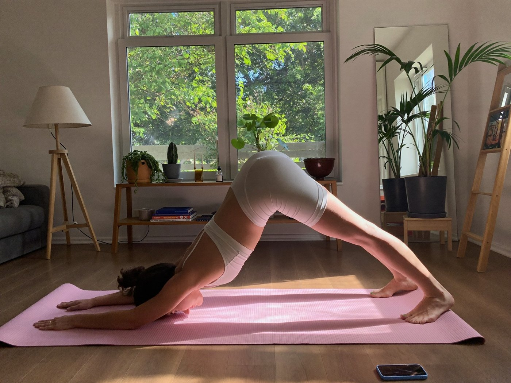
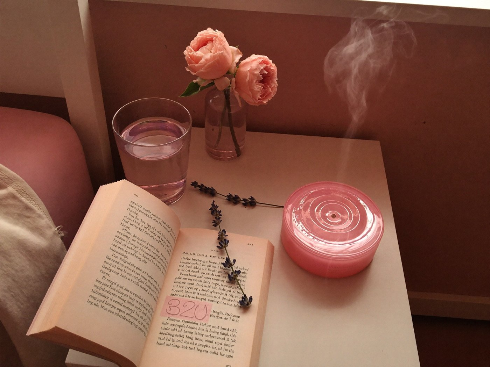

Vuelve a sentirte tú en la menopausia
Una guía cálida y con fuentes para entender tus sofocos, tu sueño, tu peso y tus emociones. Con recetas, un plan de 30 días, plantillas editables y una app que guarda tu progreso en el celular y en el computador.
 Para mujeres de 40 a 60
Con evidencia y cariño
Para mujeres de 40 a 60
Con evidencia y cariño
Tu cuerpo cambió… y nadie te dio el manual


Es más común de lo que te hicieron creer

Te mereces algo mejor que «son cosas de la edad»

Durante años, la menopausia se habló en voz baja. Y mientras tanto, millones de mujeres aguantaron calores, noches sin dormir y cambios de ánimo sin saber qué les pasaba ni qué preguntar.
Menopausia Equilibrada junta en un solo lugar lo que necesitas: explicaciones claras, comida rica, movimiento posible, rituales de calma y herramientas para medir tu progreso y llegar a tu consulta con datos. Todo con fuentes y sin promesas mágicas.
Una guía, 6 bonos, una app y tus plantillas
 Producto principal · 38 págs.
Producto principal · 38 págs.Guía Integral de la Menopausia
- Síntomas físicos y emocionales
- Alimentación recomendada
- Ejercicio y movimiento
- Sueño y descanso
- Salud hormonal
- Bienestar emocional
 Bono 1 · 20 recetas
Bono 1 · 20 recetasRecetario para la Menopausia
- Desayunos
- Almuerzos
- Cenas
- Snacks saludables
 Bono 2
Bono 2Plan de 30 Días para Recuperar Energía
- Checklist diario
- Hábitos
- Hidratación
- Movimiento
 Bono 3
Bono 3Guía de Vitaminas y Suplementos
- Magnesio
- Omega 3
- Vitamina D
- Calcio
- Cuándo consultar al médico
 Bono 4
Bono 4Diario de Síntomas y Progreso
- Registro de sueño
- Estado de ánimo
- Bochornos
- Energía diaria

Bono 5Yoga en Calma
- Guía paso a paso
- Beneficios, con lo que dice la evidencia
- Rutina semanal

Bono 6Aromaterapia en la Menopausia
- Qué dice la ciencia
- Seguridad primero
- 6 aceites y 3 rituales
 Incluida
IncluidaApp Menopausia Equilibrada
- Registro diario de sofocos, sueño, ánimo y energía
- Progreso e historial con gráficas
- Plan de 30 días con checklist
- Sincroniza tu celular y tu computador
 Incluidas
IncluidasPlantillas de seguimiento editables
- Rellenables en PDF desde el celular o el computador
- También editables dentro de la app
- Para imprimir si lo prefieres
Comida rica, de verdad


Es para ti si…
No es para ti si…
Tres pasos, a tu ritmo

Todo lo que necesitas para tu equilibrio


Antes de decidir
¿Esta guía reemplaza a mi médica?
No. Te ayuda a entender lo que vives, a cuidarte en el día a día y a preparar tu consulta. Cualquier decisión sobre medicamentos o suplementos se toma con un profesional de salud.
¿Me sirve si todavía tengo la regla?
Sí. En la perimenopausia los ciclos se vuelven irregulares y muchas mujeres notan los primeros síntomas. La guía te ayuda a ubicarte y a saber cuándo consultar.
¿Cómo funciona la app? ¿Necesito una cuenta?
La app funciona en el navegador del celular o del computador. Tus registros se guardan y puedes sincronizarlos entre tus dispositivos con tu enlace personal. No necesitas instalar nada.
¿Las plantillas se pueden rellenar sin imprimir?
Sí. Son PDF rellenables: puedes escribir en ellos desde el computador o el celular con un lector de PDF. También puedes imprimirlos si te gusta el papel.
¿Habla de terapia hormonal y de suplementos?
Sí, con lo que dicen las sociedades científicas y un semáforo de evidencia. No recomienda marcas ni dosis de medicamentos: eso le corresponde a tu médica.
¿Las recetas son para bajar de peso?
No son una dieta. Son platos ricos y fáciles, pensados para sumar proteína, calcio y fibra a tu día. Si tienes una condición de salud o alergias, adáptalas con tu profesional.
¿En qué formato lo recibo?
La guía, los bonos y las plantillas llegan en PDF tamaño A4. La app se abre con un enlace.